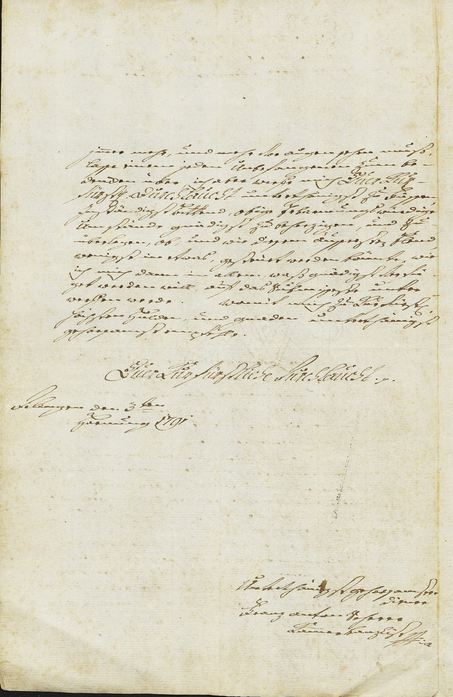

StA Augsburg, Augsburger Pflegämter Akten, 7253



Kommentar
Editor: magdalena.weileder@textgrid.de
Archiv: StA Augsburg
Bestand: Augsburger Pflegämter Akten
Signatur: 7253
Ort: Dillingen
Datum: 1791 Februar 3
Schlagwort: Akt
Schwierigkeitsgrad: mittel
Kurzbetreff:
Supplik des Kammerkanzlisten an den Kurfürsten
Supplik des Kammerkanzlisten an den Kurfürsten
Schreiberhände:
- Anton Scherer (S1)
- Bearbeitungsvermerke (S2)
Kommentar:
Entzifferung
(Absatz Beginn)
1 (Anton Scherer:) jm(m)er mehr, und mehr Vor augen sehen muß,
2 lasse einem jeden Unbefangenen Zum be-
3 dencken über, ich aber werfe mich Euer Kur-
4 fürst(lichen) Durchlauchtunterthänigst Zu Füssen,
5 Jnnständigst Bittend, obige Erbarmungswürdige
6 Umstände gnädigst Zu beherzigen, und Zu-
7 überlegen, ob, und wie diesem äusserste(n) Elend,
8 wenigst in etwas, gesteurt werden könnte, wie
9 ich mich dann in allem, waß gnädigst Verfü-
10 get werden will, auf das Submisseste unter-
11 werffen werde.Womit mich Zu Kurfürst(lich)
12 höchsten Hulden, und gnaden unterthänigst
13 gehorsamst empfehle.
14 Euer Kurfürstliche Durchlaucht (et cetera)
15 Dilingen den 3ten
16 Hornung 1791
17 Unterthänigst gehorsamster
18 Diener
19 Franz antonScherer
20 Kam(m)erkanzlist (manu propr)ia
(Absatz Ende)
Transkription
(Absatz Beginn)
1 (Anton Scherer:) immer mehr und mehr vor augen sehen muß,
2 lasse einem jeden unbefangenen zum be-
3 dencken über. Ich aber werfe mich euer kur-
4 fürstlichen durchlaucht unterthänigst zu füssen,
5 innständigst bittend, obige erbarmungswürdige
6 umstände gnädigst zu beherzigen und zu
7 überlegen, ob, und wie diesem äussersten elend,
8 wenigst in etwas, gesteurt werden könnte, wie
9 ich mich dann in allem, waß gnädigst verfü-
10 get werden will, auff das submisseste unter-
11 werffen werde. Womit mich zu kurfürstlich
12 höchsten hulden und gnaden unterthänigst
13 gehorsamst empfehle.
14 Euer kurfürstliche durchlaucht et cetera.
15 Dilingen, den 3ten
16 hornung 1791
17 Unterthänigst gehorsamster
18 diener
19 Franz Anton Scherer,
20 Kammerkanzlist, manu propria
(Absatz Ende)